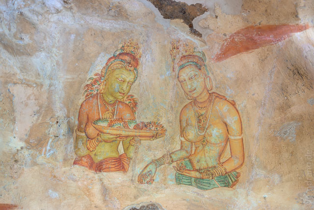
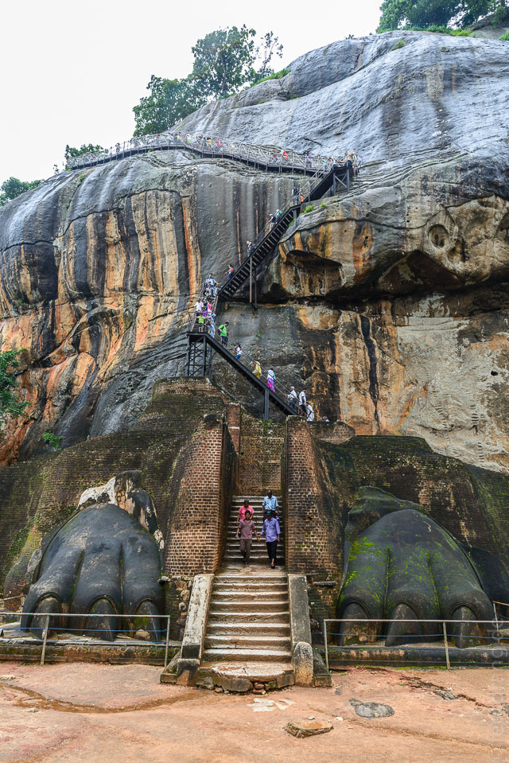
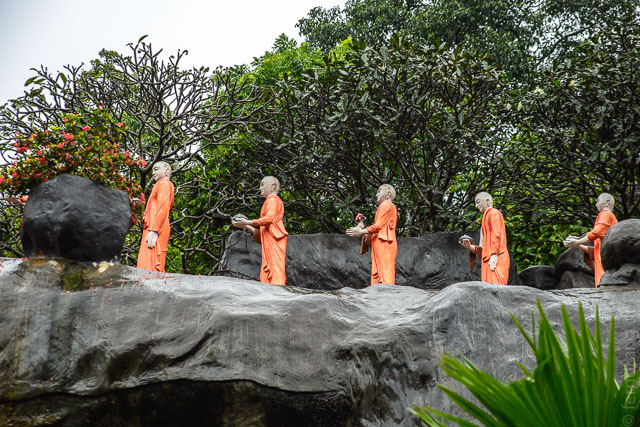
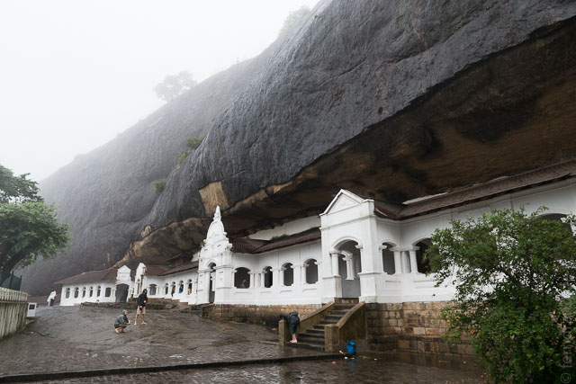
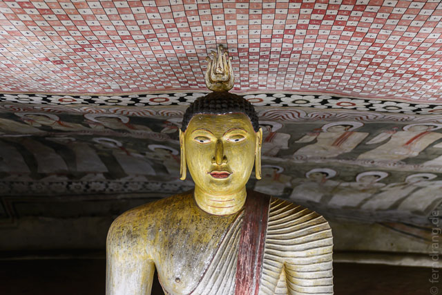
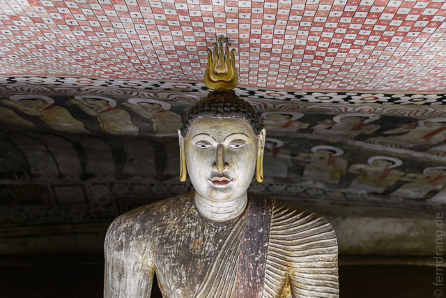
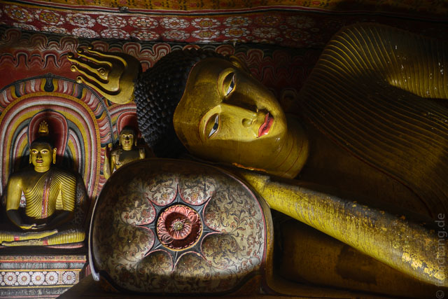
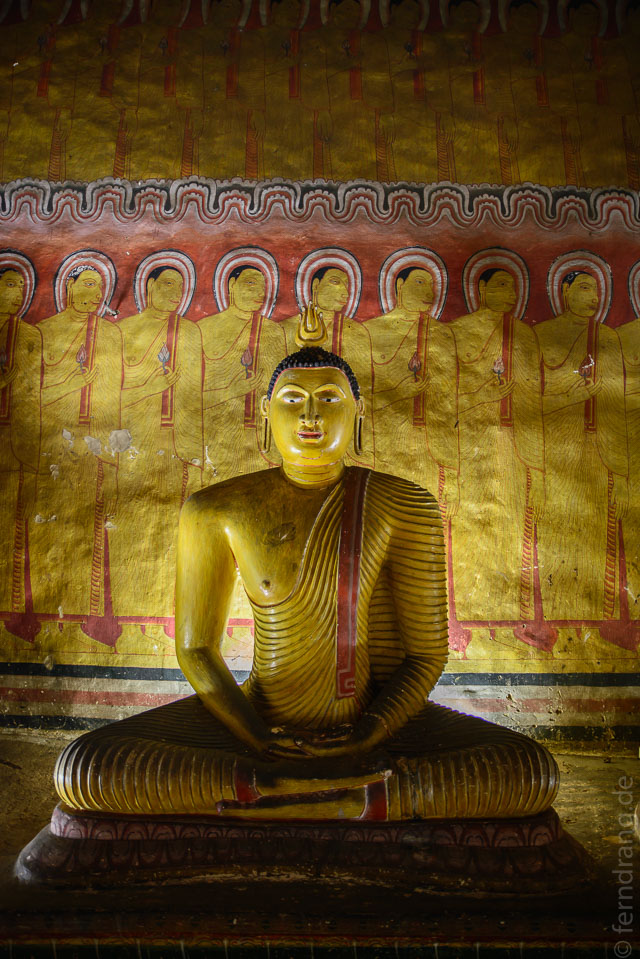
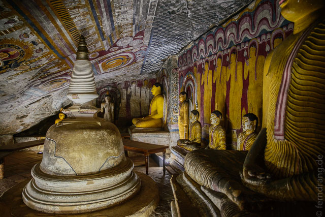
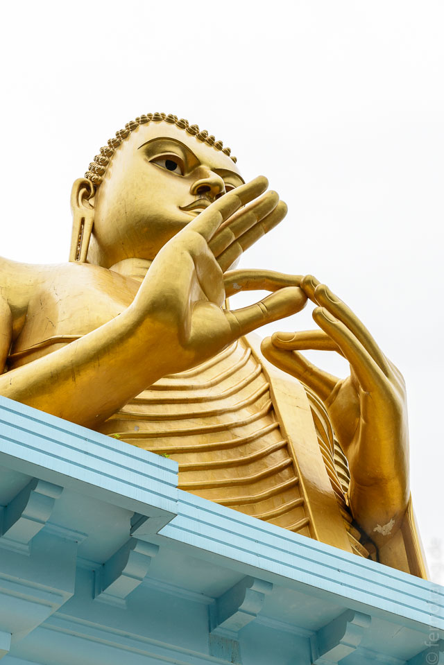

Dambulla war eigentlich gar nicht eingeplant. Aber es wurde uns als lohnenswerter Zwischenstopp auf dem Weg nach Kandy empfohlen. Unsere Unterkunft "Saman's Guesthouse" ist relativ spartanisch, aber gut besucht. Der Regen hatte den Garten und den Flur weitestgehend unter Wasser gesetzt und auch unser Zimmer hatte ein paar nasse Stellen. Angesichts der Überschwemmungen, die wir auf dem Weg im Bus gesehen und umfahren haben, war das halbwegs verständlich.
Sigiriya
In 20km Entfernung liegt die berühmte Festung Sigiriya, die sich auf einem großen, fast senkrechten Felsen 200m über dem ansonsten flachen Umland erhebt. Wieder wasserdicht verpackt sind wir hoch marschiert. Im unteren Teil sind Treppen in den Stein geschlagen. Eine Wendeltreppe führt zu einem Vorsprung, unter dem Fresken von den schönen, halbnackten "Wolkenmädchen" zu sehen sind. Von der Festung sind wieder nur die landesüblichen 30cm Mauerwerk übrig geblieben. Aber auch hier lohnt sich der Blick auf die vorgelagerten Reste der Gartenanlagen und das dichte, grüne Land. Auf den letzten Stopp unserer Tuktuk-Tour, den Kandalama-See, haben wir klitschnass dankend verzichtet.
 Dambulla
Dambulla selbst ist für seine Höhlentempel berühmt. Der Fuß des Felsen ist von einer ziemlich scheußlichen buddhistischen Anlage verunziert, die eher nach Phanasialand aussieht. Aber die Höhlen selbst sind wunderschön: Eine lange Fassade schließt eine Reihe von Felsvorsprüngen zu Höhlen, in denen zahllose große Buddha-Statuen sitzen (und liegen). Die Steindecke ist komplett mit schönen Mustern bemalt. In der schummrigen Dunkelheit blitzen die Augen der Buddhas, die geschickt von unten beleuchtet werden.
       